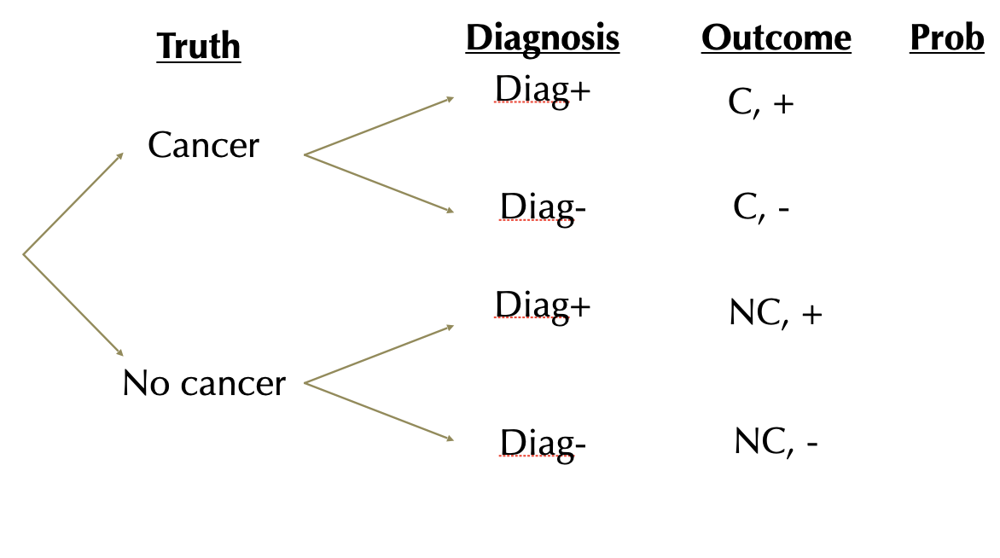
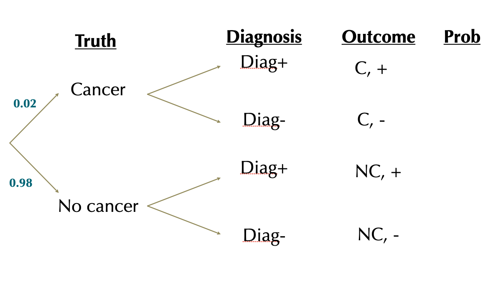
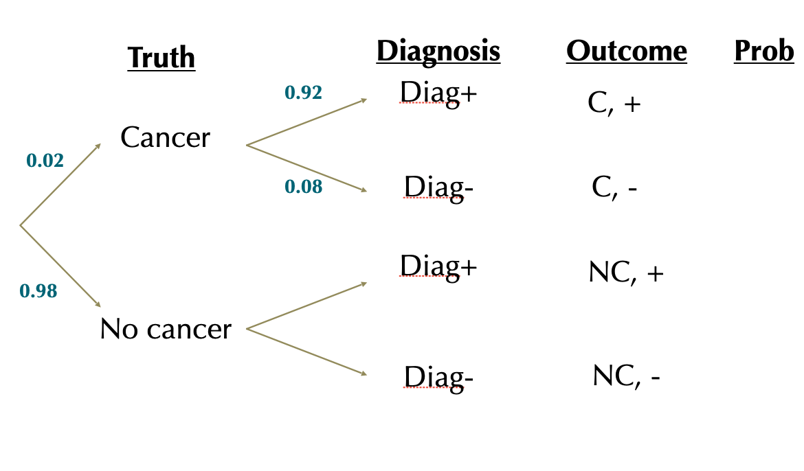
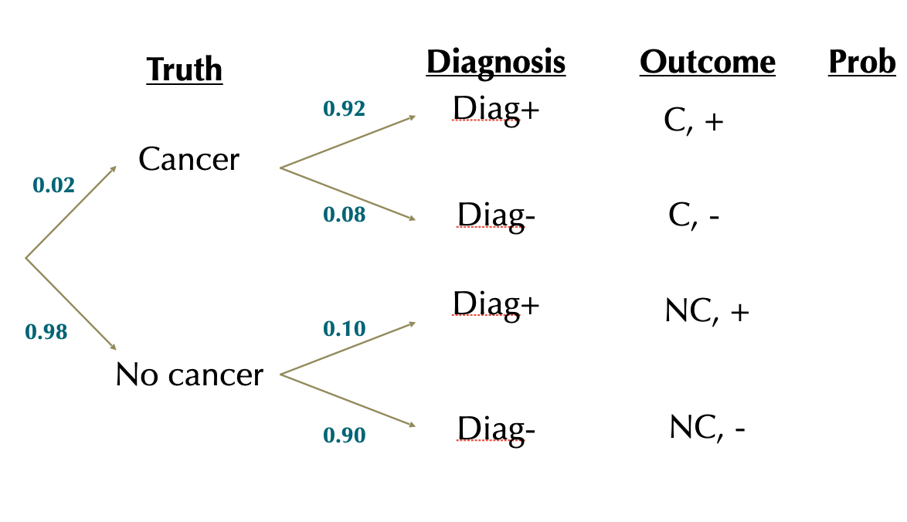
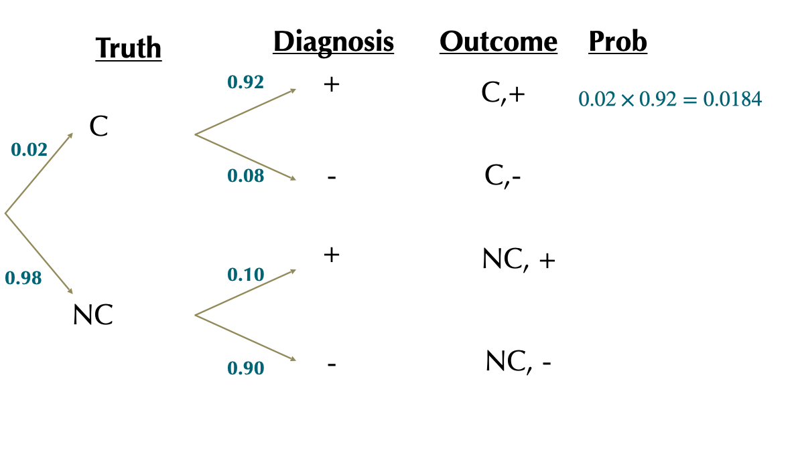
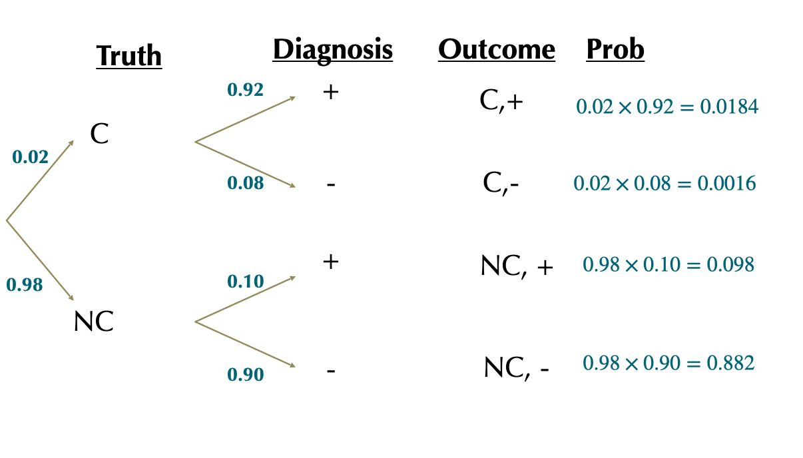
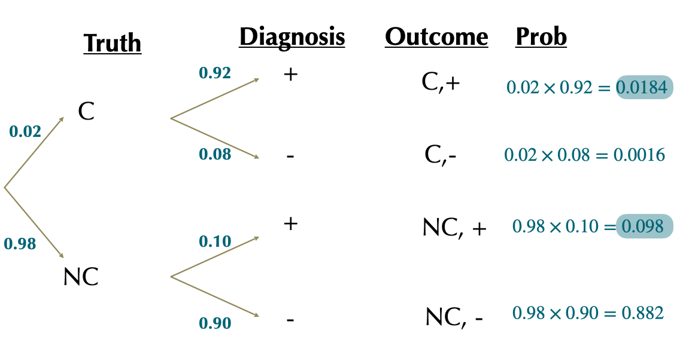
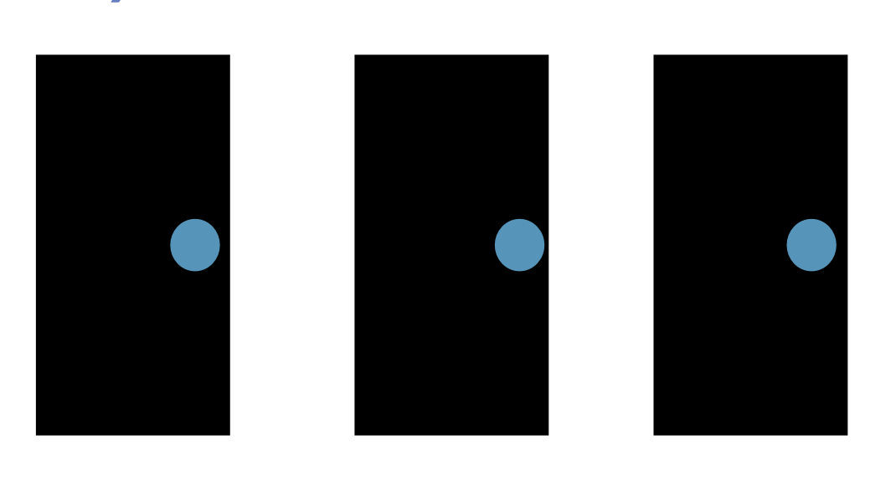
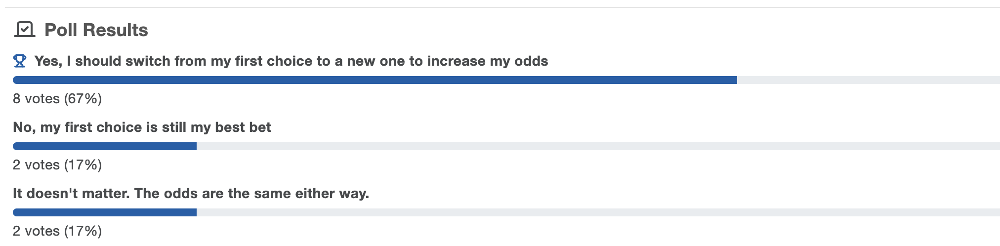
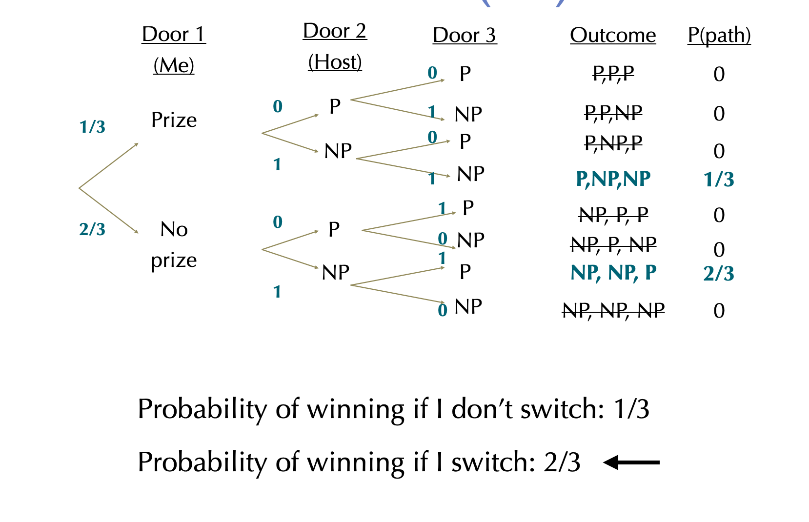

3.4.Probability
Probability Rules
Reminders/Announcements
- PS1 grades posted over the break; please chek key carefully (I graded benevolently)
- PS2 due Friday, no grace days – will not accept late assignments after I post a key Sat 00:30 am
- Coding Assignment 1 - due 11/2, resubmissions will be allowed after 1st grading
- Exam next week: announcement sent before breaka nd will start thread on Piazza this afternoon with info and space for Qs
- Please note slight change in OH on course page
- Please check Piazza often and participate
- Mid semester check-in
Recap
Short summary: Multiplication Principle
The probability of AND involves multiplication: \(P[A \& B]=P[A]\times P[B|A]\)
If the two are independent : \(P[B|A] = P[B]\)
Therefore, for independent events: \(P[A \& B]= P[A]\times P[B]\)
Short summary: Addition Principle
The probability of A OR B involves addition:
\(P[A \text{ OR } B] = P[A] + P[B] - P[A \text{ & } B]\)
- if the two are mutually exclusive, \(P[A \text{ & } B] = 0\), and therefore \(P[A \text{ or } B] = P[A] + P[B]\)
Bayes’ Theorem
\[\huge{P[A|B] = \frac{P[B|A]\times P[A]}{P[B]}}\]
Challenge: Rare Disease Diagnosis
What proportion of women (ages 40-49) whose 1st mammogram suggests they have breast cancer actually do have breast cancer?
About 20 in 1000 women (ages 40-49) have breast cancer.
A mammogram will reliably detect breast cancer in ~ 920 of every 1000 patients who truly have cancer. (this is called a true positive” result)
A mammogram will incorrectly diagnose 100 of every 1000 cancer free patients as having cancer. (this is called a “false positive” result)
[work in pairs]
Tip: use a probability tree or Bayes’ theorem
Solution 1
What we know:
Let \(C\) and \(NC\) be the cancer statuses and \(+\) and \(-\) the test results.
\(P[C]=0.02\)
\(P[NC]=1-0.02=0.98\)
\(P[+|C]=0.92\)
\(P[+|NC]=0.10\)
What we want: \(P[C|+]\) or, in other words, the proportion of positive test cases that are actually true positives
What proportion of + results actually are obtained by C patients?
\(\frac{P[C\& +]}{P[+]}\), but what’s \(P[+]\)?
Solution 1

Solution 1

Solution 1

Solution 1

Solution 1

Solution 1

Solution 1

\(P[+]=0.0184+0.098=0.1164\)
Proportion of + tests where there actually is cancer is:
\(= \frac{P[C,+]}{P[+]}=\frac{0.0184}{0.1164}=0.1578\)
Solution 2: Bayes’ Theorem
Let \(C\) and \(NC\) be the cancer statuses and \(+\) and \(-\) the test results.
\(P[C]=0.02\)
\(P[NC]=1-0.02=0.98\)
\(P[+|C]=0.92\)
\(P[+|NC]=0.10\)
What we want: \(P[C|+]\) or, in other words, the proportion of positive test cases that are actually true positives
So we want: \(P[C|+]=\frac{P[+|C]\times P[C]}{P[+]}\)
We have \(P[+|C], P[C]\), but what about \(P[+]\)?
Solution 2: Bayes’ Theorem
So we want: \(P[C|+]=\frac{P[+|C]\times P[C]}{P[+]}\)
We have \(P[+|C], P[C]\), but what about \(P[+]\)?
Law of total probability: \(P[+]=P[+|C]\times P[C]+(P[+|NC]\times P[NC]\)
\(P[+]= (0.92\times0.02)+(0.10\times0.98)=0.0184+0.098=0.1164\)
Now we can use Bayes’ theorem: \(P[C|+]=\frac{P[+|C]\times P[C]}{P[+]}\)
\(P[C|+]=\frac{0.92\times 0.02}{0.1164}=0.1580756\approx 0.158\)
Monty Hall
The problem:
- You are a contestant in a show and you are presented with 3 doors. You must choose one door and you get to keep what’s behind it. Behind one of the doors is a fancy new car
- You pick one door (but the host doesn’t open it yet)
- At this point the host chooses one of the other two doors and opens it. There is a goat behind it.
- He now offers you the chance to choose the other door (the one you didn’t choose and hasn’t been opened yet). What do you do?

Cont.
- There are no tricks here, just probabilityAll doors look identical. The host (who knows which door has the car) has a perfect poker face and reveals nothing
- Because the host knows where the car is, he would never have chosen the door that has the car.

Key points to understanding the Monty Hall puzzle:
- Two choices are 50-50 when you know nothing about them
- Monty helps us by “filtering” the bad choices on the other side.
- It’s a choice of a random guess and the “Champ door” that’s the best on the other side.
- In general, more information means you re-evaluate your choices.
Monty Hall: One Solution

Monty Hall: One Solution
The fatal flaw in the Monty Hall paradox is not taking Monty’s filtering into account, thinking the chances are the same before and after.
But the goal isn’t to understand this puzzle — it’s to realize how subsequent actions & information challenge previous decisions.
Bayes’ Theorem On the Beach
Probability Wrap Up
Probability theory provides a foundation for rigorous statistics.
Application of simple rules of probability facilitates the generation of more complex predictions.
We can use Bayes’ Theorem to translate between probabilistic statements
Probability handout (Moodle) has more practice questions.